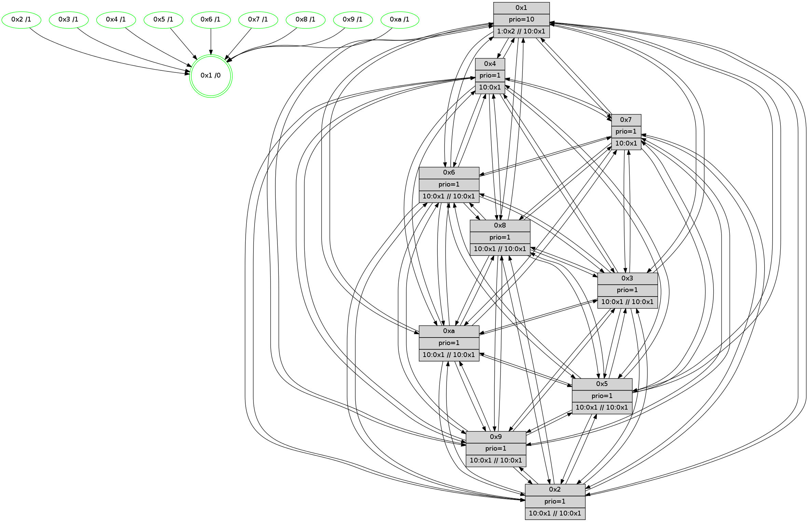

>> << IDX [start] -100 -25 -5 +0 +5 +25 +100 [515.078125954]
 Previous packets
----------------------------------------------------------------------
510.349341 beacon01(faad) #0 coord=01,02,03,04,05,06,07,0a,09,08 cycle=688.0ms assoc
-- color-indic=1 64 b4 00
510.359323 beacon02(faad) #0 coord=01,02,03,04,05,06,07,0a,09,08 cycle=688.0ms assoc 64 27 31
510.369324 beacon03(faad) #0 coord=01,02,03,04,05,06,07,0a,09,08 cycle=688.0ms assoc 64 5d 7c
510.379324 beacon04(faad) #0 coord=01,02,03,04,05,06,07,0a,09,08 cycle=688.0ms assoc 64 2a 96
510.389325 beacon05(faad) #0 coord=01,02,03,04,05,06,07,0a,09,08 cycle=688.0ms assoc 64 50 db
510.399324 beacon06(faad) #0 coord=01,02,03,04,05,06,07,0a,09,08 cycle=688.0ms assoc 64 de 0c
510.409324 beacon07(faad) #0 coord=01,02,03,04,05,06,07,0a,09,08 cycle=688.0ms assoc 64 a4 41
510.419328 beacon0a(faad) #0 coord=01,02,03,04,05,06,07,0a,09,08 cycle=688.0ms assoc 64 d5 4a
510.429329 beacon09(faad) #0 coord=01,02,03,04,05,06,07,0a,09,08 cycle=688.0ms assoc 64 5b 9d
510.450567 [Hello(10): seq=261 sym=6,3,2,8,9,5,7,4,1 sysInfo=coloring-mode-on,ColoringModeIndicationCalled stat=6:4,7,6,1/3:11,4,5,3/2:4,4,3,4/8:13,6,6,2/9:4,3,4,2/5:13,3,5,3/7:12,7,5,1/4:12,5,2,3/1:10,7,9,0]
510.453254 [Hello(5): seq=329 sym=7,6,4,3,1,9,8,10,2 sysInfo=coloring-mode-on,ColoringModeIndicationCalled stat=7:10,6,6,1/6:15,6,7,1/4:13,6,2,1/3:9,4,1,0/1:6,6,9,0/9:11,3,4,1/8:15,7,5,0/10:7,5,2,1/2:12,4,3,2]
510.455798 [Hello(4): seq=329 sym=5,7,6,2,3,9,8,10,1 sysInfo=coloring-mode-on,ColoringModeIndicationCalled stat=5:5,3,6,4/7:12,6,7,1/6:1,5,6,2/2:14,4,3,3/3:14,4,5,3/9:2,1,0,0/8:2,4,7,2/10:1,4,3,1/1:4,7,12,0]
510.458537 [Color(1) seq=9 @0:0 prio=10 >1.@2,1.@3,1.@4,1.@5 >>10.@1,1.@2,1.@3]
510.465670 [Hello(9): seq=272 sym=5,2,3,4,7,6,8,10,1 sysInfo=coloring-mode-on,ColoringModeIndicationCalled stat=5:15,4,3,4/2:11,5,4,2/3:4,7,3,2/4:4,5,2,2/7:0,8,7,1/6:9,4,6,2/8:2,5,1,0/10:13,3,3,1/1:15,5,9,0]
----------------------------------------------------------------------
511.137471 beacon01(faad) #0 coord=01,02,03,04,05,06,07,0a,09,08 cycle=688.0ms assoc
-- color-indic=1 64 70 0e
511.147453 beacon02(faad) #0 coord=01,02,03,04,05,06,07,0a,09,08 cycle=688.0ms assoc 64 e3 3f
511.157455 beacon03(faad) #0 coord=01,02,03,04,05,06,07,0a,09,08 cycle=688.0ms assoc 64 99 72
511.167455 beacon04(faad) #0 coord=01,02,03,04,05,06,07,0a,09,08 cycle=688.0ms assoc 64 ee 98
511.177455 beacon05(faad) #0 coord=01,02,03,04,05,06,07,0a,09,08 cycle=688.0ms assoc 64 94 d5
511.187453 beacon06(faad) #0 coord=01,02,03,04,05,06,07,0a,09,08 cycle=688.0ms assoc 64 1a 02
511.197455 beacon07(faad) #0 coord=01,02,03,04,05,06,07,0a,09,08 cycle=688.0ms assoc 64 60 4f
511.207459 beacon0a(faad) #0 coord=01,02,03,04,05,06,07,0a,09,08 cycle=688.0ms assoc 64 11 44
511.217458 beacon09(faad) #0 coord=01,02,03,04,05,06,07,0a,09,08 cycle=688.0ms assoc 64 9f 93
511.227459 beacon08(faad) #0 coord=01,02,03,04,05,06,07,0a,09,08 cycle=688.0ms assoc 64 e5 de
511.240306 [Hello(1): seq=238 sym=4,2,9,5,10,3,8,6,7 sysInfo=coloring-mode-on,ColoringModeRequestCalled stat=4:4,7,7,4/2:0,6,7,5/9:15,6,8,3/5:11,7,7,4/10:1,8,6,1/3:3,7,8,5/8:7,8,10,3/6:5,9,10,2/7:14,9,10,2]
511.243025 [Color(3) seq=9 @0:0 prio=1 >10.@1,1.@2,1.@4,1.@5]
511.246045 [Color(8) seq=9 @0:0 prio=1 >10.@1,1.@2,1.@3,1.@4 >>10.@1,1.@2,1.@3]
511.248549 [Color(10) seq=9 @0:0 prio=1 >10.@1,1.@2,1.@3,1.@4 >>10.@1,1.@2,1.@3]
511.250651 [Color(4) seq=9 @0:0 prio=1 >10.@1,1.@2,1.@3,1.@5]
511.252859 [Color(6) seq=9 @0:0 prio=1 >10.@1,1.@2,1.@3,1.@4 >>10.@1,1.@2,1.@3]
511.256552 [Color(5) seq=9 @0:0 prio=1 >10.@1,1.@2,1.@3,1.@4]
511.258793 [Color(9) seq=9 @0:0 prio=1 >10.@1,1.@2,1.@3,1.@4 >>10.@1,1.@2,1.@3]
511.263724 [Color(2) seq=9 @0:0 prio=1 >10.@1,1.@3,1.@4,1.@5 >>10.@1,1.@2,1.@3]
511.266788 [Hello(7): seq=329 sym=2,3,5,6,4,8,9,10,1 sysInfo=coloring-mode-on,ColoringModeIndicationCalled stat=2:15,2,6,5/3:9,1,7,4/5:11,3,7,5/6:5,3,6,2/4:7,3,5,3/8:9,4,6,2/9:12,1,6,3/10:11,2,6,1/1:15,8,7,0]
511.271539 [Color(7) seq=9 @0:0 prio=1 >10.@1,1.@2,1.@3,1.@4]
----------------------------------------------------------------------
511.925603 beacon01(faad) #0 coord=01,02,03,04,05,06,07,0a,09,08 cycle=688.0ms assoc
-- color-indic=1 64 cc 0b
511.935584 beacon02(faad) #0 coord=01,02,03,04,05,06,07,0a,09,08 cycle=688.0ms assoc 64 5f 3a
511.945585 beacon03(faad) #0 coord=01,02,03,04,05,06,07,0a,09,08 cycle=688.0ms assoc 64 25 77
511.955586 beacon04(faad) #0 coord=01,02,03,04,05,06,07,0a,09,08 cycle=688.0ms assoc 64 52 9d
511.965586 beacon05(faad) #0 coord=01,02,03,04,05,06,07,0a,09,08 cycle=688.0ms assoc 64 28 d0
511.975588 beacon06(faad) #0 coord=01,02,03,04,05,06,07,0a,09,08 cycle=688.0ms assoc 64 a6 07
511.985587 beacon07(faad) #0 coord=01,02,03,04,05,06,07,0a,09,08 cycle=688.0ms assoc 64 dc 4a
511.995590 beacon0a(faad) #0 coord=01,02,03,04,05,06,07,0a,09,08 cycle=688.0ms assoc 64 ad 41
512.005592 beacon09(faad) #0 coord=01,02,03,04,05,06,07,0a,09,08 cycle=688.0ms assoc 64 23 96
512.015592 beacon08(faad) #0 coord=01,02,03,04,05,06,07,0a,09,08 cycle=688.0ms assoc 64 59 db
512.026808 [Hello(8): seq=273 sym=5,2,3,4,7,6,9,10,1 sysInfo=coloring-mode-on,ColoringModeIndicationCalled stat=5:15,3,5,3/2:9,4,4,3/3:8,3,4,4/4:14,5,3,2/7:13,6,7,2/6:4,6,8,2/9:0,4,5,2/10:12,3,2,1/1:0,7,10,0]
512.030471 [Hello(10): seq=262 sym=6,3,2,8,9,5,7,4,1 sysInfo=coloring-mode-on,ColoringModeIndicationCalled stat=6:4,8,6,1/3:12,4,5,3/2:4,5,3,4/8:13,6,6,2/9:5,4,4,2/5:14,4,5,3/7:13,8,5,1/4:13,6,2,3/1:11,8,9,0]
512.033310 [Hello(4): seq=330 sym=5,7,6,2,3,9,8,10,1 sysInfo=coloring-mode-on,ColoringModeIndicationCalled stat=5:5,4,6,4/7:13,7,7,1/6:1,6,6,2/2:15,5,3,3/3:14,4,5,3/9:3,2,0,0/8:2,4,7,2/10:1,4,3,1/1:5,8,12,0]
512.036688 [Hello(2): seq=327 sym=4,5,7,6,3,9,8,10,1 sysInfo=coloring-mode-on,ColoringModeIndicationCalled stat=4:15,5,3,1/5:15,4,4,3/7:9,9,6,1/6:15,8,6,1/3:12,4,4,2/9:2,1,1,0/8:1,3,1,0/10:0,3,0,0/1:4,6,9,0]
512.039570 [Hello(3): seq=330 sym=1,7,6,2,4,8,9,10,5 sysInfo=coloring-mode-on,ColoringModeIndicationCalled stat=1:3,7,9,0/7:3,9,6,2/6:12,6,6,2/2:12,5,3,4/4:1,6,3,2/8:7,7,6,1/9:4,3,6,2/10:0,1,0,0/5:0,4,6,3]
512.042591 [Color(1) seq=10 @0:0 prio=10 >1.@2,1.@3,1.@4,1.@5 >>10.@1,1.@2,1.@3]
512.044977 [Hello(5): seq=330 sym=7,6,4,3,1,9,8,10,2 sysInfo=coloring-mode-on,ColoringModeIndicationCalled stat=7:11,7,6,1/6:15,6,7,1/4:14,6,2,1/3:9,4,1,0/1:7,7,9,0/9:12,4,4,1/8:15,7,5,0/10:7,5,2,1/2:13,5,3,2]
----------------------------------------------------------------------
512.713733 beacon01(faad) #0 coord=01,02,03,04,05,06,07,0a,09,08 cycle=688.0ms assoc
-- color-indic=1 64 f8 13
512.723715 beacon02(faad) #0 coord=01,02,03,04,05,06,07,0a,09,08 cycle=688.0ms assoc 64 6b 22
512.733717 beacon03(faad) #0 coord=01,02,03,04,05,06,07,0a,09,08 cycle=688.0ms assoc 64 11 6f
512.743716 beacon04(faad) #0 coord=01,02,03,04,05,06,07,0a,09,08 cycle=688.0ms assoc 64 66 85
512.753718 beacon05(faad) #0 coord=01,02,03,04,05,06,07,0a,09,08 cycle=688.0ms assoc 64 1c c8
512.763717 beacon06(faad) #0 coord=01,02,03,04,05,06,07,0a,09,08 cycle=688.0ms assoc 64 92 1f
512.773716 beacon07(faad) #0 coord=01,02,03,04,05,06,07,0a,09,08 cycle=688.0ms assoc 64 e8 52
512.783720 beacon0a(faad) #0 coord=01,02,03,04,05,06,07,0a,09,08 cycle=688.0ms assoc 64 99 59
512.793722 beacon09(faad) #0 coord=01,02,03,04,05,06,07,0a,09,08 cycle=688.0ms assoc 64 17 8e
512.803722 beacon08(faad) #0 coord=01,02,03,04,05,06,07,0a,09,08 cycle=688.0ms assoc 64 6d c3
512.815288 [Hello(1): seq=239 sym=4,2,9,5,10,3,8,6,7 sysInfo=coloring-mode-on,ColoringModeRequestCalled stat=4:4,8,7,4/2:0,7,7,5/9:15,7,8,3/5:12,8,7,4/10:1,9,6,1/3:3,8,8,5/8:8,9,10,3/6:5,10,10,2/7:15,10,10,2]
512.822950 [Color(3) seq=10 @0:0 prio=1 >10.@1,1.@2,1.@4,1.@5 >>10.@1,1.@2,1.@3]
512.826170 [Hello(6): seq=330 sym=2,3,5,4,7,9,8,10,1 sysInfo=coloring-mode-on,ColoringModeIndicationCalled stat=2:13,3,6,3/3:0,4,5,2/5:1,4,5,4/4:1,4,4,2/7:8,7,4,0/9:15,5,5,2/8:10,4,5,2/10:12,2,7,1/1:1,9,8,0]
512.828987 [Color(6) seq=10 @0:0 prio=1 >10.@1,1.@2,1.@3,1.@4 >>10.@1,1.@2,1.@3]
512.831845 [Color(10) seq=10 @0:0 prio=1 >10.@1,1.@2,1.@3,1.@4 >>10.@1,1.@2,1.@3]
512.842046 [Hello(7): seq=330 sym=2,3,5,6,4,8,9,10,1 sysInfo=coloring-mode-on,ColoringModeIndicationCalled stat=2:0,2,6,5/3:10,1,7,4/5:12,3,7,5/6:5,3,6,2/4:8,3,5,3/8:10,4,6,2/9:12,1,6,3/10:12,2,6,1/1:0,9,7,0]
512.845174 [Color(7) seq=10 @0:0 prio=1 >10.@1,1.@2,1.@3,1.@4]
----------------------------------------------------------------------
513.501863 beacon01(faad) #0 coord=01,02,03,04,05,06,07,0a,09,08 cycle=688.0ms assoc
-- color-indic=1 64 44 16
513.511847 beacon02(faad) #0 coord=01,02,03,04,05,06,07,0a,09,08 cycle=688.0ms assoc 64 d7 27
513.521846 beacon03(faad) #0 coord=01,02,03,04,05,06,07,0a,09,08 cycle=688.0ms assoc 64 ad 6a
513.531847 beacon04(faad) #0 coord=01,02,03,04,05,06,07,0a,09,08 cycle=688.0ms assoc 64 da 80
513.541847 beacon05(faad) #0 coord=01,02,03,04,05,06,07,0a,09,08 cycle=688.0ms assoc 64 a0 cd
513.551847 beacon06(faad) #0 coord=01,02,03,04,05,06,07,0a,09,08 cycle=688.0ms assoc 64 2e 1a
513.561847 beacon07(faad) #0 coord=01,02,03,04,05,06,07,0a,09,08 cycle=688.0ms assoc 64 54 57
513.571850 beacon0a(faad) #0 coord=01,02,03,04,05,06,07,0a,09,08 cycle=688.0ms assoc 64 25 5c
513.581851 beacon09(faad) #0 coord=01,02,03,04,05,06,07,0a,09,08 cycle=688.0ms assoc 64 ab 8b
513.591853 beacon08(faad) #0 coord=01,02,03,04,05,06,07,0a,09,08 cycle=688.0ms assoc 64 d1 c6
513.604034 [Hello(3): seq=331 sym=1,7,6,2,4,8,9,10,5 sysInfo=coloring-mode-on,ColoringModeIndicationCalled stat=1:4,8,9,0/7:4,10,6,2/6:13,7,6,2/2:12,5,3,4/4:1,6,3,2/8:7,7,6,1/9:4,3,6,2/10:0,2,0,0/5:1,4,6,3]
513.607039 [Hello(8): seq=274 sym=5,2,3,4,7,6,9,10,1 sysInfo=coloring-mode-on,ColoringModeIndicationCalled stat=5:0,3,5,3/2:10,4,4,3/3:9,4,4,4/4:15,5,3,2/7:14,7,7,2/6:5,7,8,2/9:1,4,5,2/10:12,4,2,1/1:1,8,10,0]
513.609460 [Color(1) seq=11 @0:0 prio=10 >1.@2,1.@3,1.@4,1.@5 >>10.@1,1.@2,1.@3]
513.612309 [Hello(2): seq=328 sym=4,5,7,6,3,9,8,10,1 sysInfo=coloring-mode-on,ColoringModeIndicationCalled stat=4:15,5,3,1/5:0,4,4,3/7:10,10,6,1/6:0,9,6,1/3:13,5,4,2/9:2,1,1,0/8:1,3,1,0/10:0,4,0,0/1:5,7,9,0]
513.615505 [Hello(10): seq=263 sym=6,3,2,8,9,5,7,4,1 sysInfo=coloring-mode-on,ColoringModeIndicationCalled stat=6:4,8,6,1/3:13,4,5,3/2:5,5,3,4/8:13,6,6,2/9:5,4,4,2/5:15,4,5,3/7:14,9,5,1/4:14,6,2,3/1:12,9,9,0]
513.619276 [Hello(9): seq=274 sym=5,2,3,4,7,6,8,10,1 sysInfo=coloring-mode-on,ColoringModeIndicationCalled stat=5:0,5,3,4/2:13,6,4,2/3:5,8,3,2/4:5,5,2,2/7:2,10,7,1/6:10,5,6,2/8:2,5,1,0/10:13,4,3,1/1:1,6,9,0]
513.624084 [Hello(4): seq=331 sym=5,7,6,2,3,9,8,10,1 sysInfo=coloring-mode-on,ColoringModeIndicationCalled stat=5:6,4,6,4/7:14,8,7,1/6:2,7,6,2/2:0,6,3,3/3:15,5,5,3/9:3,2,0,0/8:2,4,7,2/10:1,5,3,1/1:6,9,12,0]
513.627618 [Hello(5): seq=331 sym=7,6,4,3,1,9,8,10,2 sysInfo=coloring-mode-on,ColoringModeIndicationCalled stat=7:12,8,6,1/6:0,7,7,1/4:14,6,2,1/3:9,5,1,0/1:8,7,9,0/9:12,4,4,1/8:15,7,5,0/10:7,6,2,1/2:13,5,3,2]
----------------------------------------------------------------------
514.289995 beacon01(faad) #0 coord=01,02,03,04,05,06,07,0a,09,08 cycle=688.0ms assoc
-- color-indic=1 64 80 18
514.299978 beacon02(faad) #0 coord=01,02,03,04,05,06,07,0a,09,08 cycle=688.0ms assoc 64 13 29
514.309978 beacon03(faad) #0 coord=01,02,03,04,05,06,07,0a,09,08 cycle=688.0ms assoc 64 69 64
514.319978 beacon04(faad) #0 coord=01,02,03,04,05,06,07,0a,09,08 cycle=688.0ms assoc 64 1e 8e
514.329979 beacon05(faad) #0 coord=01,02,03,04,05,06,07,0a,09,08 cycle=688.0ms assoc 64 64 c3
514.339978 beacon06(faad) #0 coord=01,02,03,04,05,06,07,0a,09,08 cycle=688.0ms assoc 64 ea 14
514.349979 beacon07(faad) #0 coord=01,02,03,04,05,06,07,0a,09,08 cycle=688.0ms assoc 64 90 59
514.359984 beacon0a(faad) #0 coord=01,02,03,04,05,06,07,0a,09,08 cycle=688.0ms assoc 64 e1 52
514.369984 beacon09(faad) #0 coord=01,02,03,04,05,06,07,0a,09,08 cycle=688.0ms assoc 64 6f 85
514.379985 beacon08(faad) #0 coord=01,02,03,04,05,06,07,0a,09,08 cycle=688.0ms assoc 64 15 c8
514.391888 [Hello(1): seq=240 sym=4,2,9,5,10,3,8,6,7 sysInfo=coloring-mode-on,ColoringModeRequestCalled stat=4:5,8,7,4/2:1,7,7,5/9:0,7,8,3/5:13,8,7,4/10:2,10,6,1/3:4,9,8,5/8:8,9,10,3/6:6,11,10,2/7:0,11,10,2]
514.398092 [Color(6) seq=11 @0:0 prio=1 >10.@1,1.@2,1.@3,1.@4 >>10.@1,1.@2,1.@3]
514.400184 [STC(3)->1 #0.15 stable,to-color d=1]
514.401739 [Color(2) seq=11 @0:0 prio=1 >10.@1,1.@3,1.@4,1.@5 >>10.@1,1.@2,1.@3]
514.403865 [Color(3) seq=11 @0:0 prio=1 >10.@1,1.@2,1.@4,1.@5 >>10.@1,1.@2,1.@3]
514.407029 [Color(4) seq=11 @0:0 prio=1 >10.@1,1.@2,1.@3,1.@5]
514.408773 [Hello(7): seq=331 sym=2,3,5,6,4,8,9,10,1 sysInfo=coloring-mode-on,ColoringModeIndicationCalled stat=2:1,2,6,5/3:11,1,7,4/5:13,3,7,5/6:5,3,6,2/4:9,3,5,3/8:11,4,6,2/9:13,1,6,3/10:13,2,6,1/1:1,9,7,0]
514.412432 [Color(5) seq=11 @0:0 prio=1 >10.@1,1.@2,1.@3,1.@4 >>10.@1,1.@2,1.@3]
514.414413 [Color(10) seq=11 @0:0 prio=1 >10.@1,1.@2,1.@3,1.@4 >>10.@1,1.@2,1.@3]
514.417798 [Color(7) seq=11 @0:0 prio=1 >10.@1,1.@2,1.@3,1.@4]
514.427785 [Color(9) seq=11 @0:0 prio=1 >10.@1,1.@2,1.@3,1.@4 >>10.@1,1.@2,1.@3]